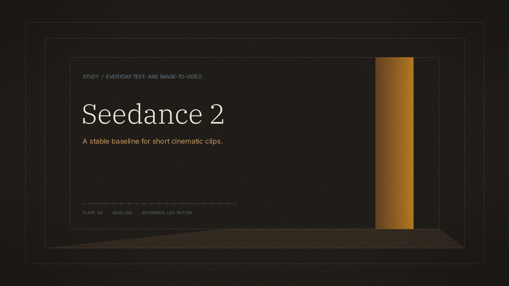
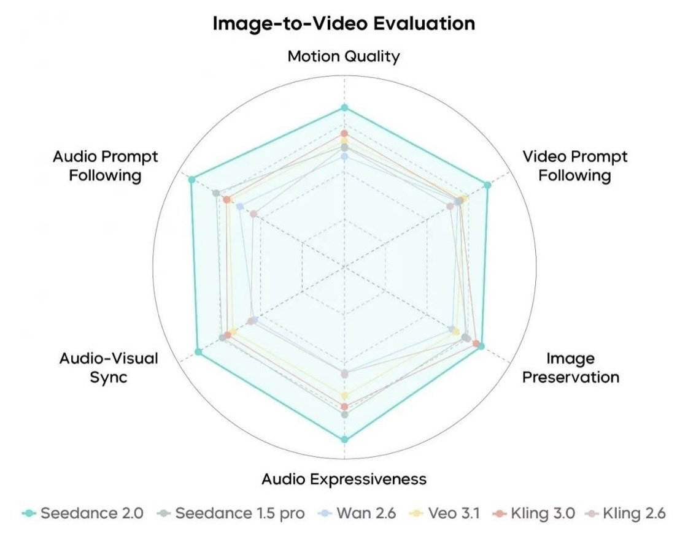

TLDR Seedance 2 is positioned as a stable baseline for everyday text-to-video and image-to-video work. On the same site, Seedance 2.5 is the newer route when a shot needs stronger motion and a more finished look.
Seedance 2 is the everyday engine for turning a clear prompt, a reference frame, or a product still into a short cinematic clip. The product page treats it as a dependable baseline rather than a peak-quality finish: image-to-video when the subject must stay visually anchored, and text-to-video when the shot can be described in language alone.
That framing only holds if the neighboring options are kept in view. The same site lists Seedance 2.5 for shots that need stronger motion, richer atmosphere, and a more production-ready direction; a Fast mode for comparing directions before a final render; and Seedance 2 Mini for lighter drafts and early prompt shaping. Choosing Seedance 2 is a decision about a stable everyday path, not a claim that it is the only engine on the page.
The underlying Seedance 2.0 model was officially launched by ByteDance Seed on 12 February 2026. The official Seedance 2.0 launch article publishes vendor evaluations of text-to-video, image-to-video, and multimodal reference tasks. Those charts compare Seedance 2.0 with earlier Seedance, Wan, Veo, and Kling releases available at the time. They are developer evaluations, not an independent arena.

Source: ByteDance Seed's official Seedance 2.0 launch article. The chart is a vendor evaluation with unlabeled axis units; no numeric axis scores are read off the figure here.
| Feature / Metric | Seedance 2 | Status / Source |
|---|---|---|
| Role on the site | Stable baseline for everyday T2V and I2V | Product page |
| Newer option on the same site | Seedance 2.5, for stronger motion and finished direction | Product page |
| Draft routes | Fast mode; Seedance 2 Mini | Product page |
| Typical inputs | Prompt plus supported visual references | Product page |
| Official 2.0 launch | 12 February 2026 | ByteDance Seed blog |
| Official 2.0 reference mix (model release) | Up to 9 images, 3 video clips, and 3 audio clips, plus language | Official launch article |
| Official 2.0 clip length (model release) | 15-second high-quality multi-shot output | Official launch article |
| AA-Video-T2V v2.1 (10 Nov 2026) | Dreamina Seedance 2.0: Elo 1137 ± 13 | Artificial Analysis |
The product page describes a three-step loop: describe the idea or add a reference, set the direction, then generate and refine. The brief should name the subject, action, camera move, and style. Image-to-video is the right branch when a still already defines appearance or composition.
Seedance 2 everyday loop
[Text prompt]
+ optional [Reference image / supported references]
|
v
Choose: Seedance 2 (baseline)
or Seedance 2.5 (newer cinematic route)
or Fast / Mini (draft comparison)
|
v
Short clip -> review subject, motion, camera -> revise one variable
Official 2.0 materials describe a unified multimodal audio-video architecture, two-channel audio, video extension, and targeted editing. The Seedance 2 AI Video Generator page does not restate every one of those limits as workspace constants, so this article treats the 15-second multi-shot figure and the 9/3/3 reference mix as properties of the official launch write-up, not as numbers invented for the webpage.
The product page highlights two production strengths: people-focused motion (body movement, pose, and stable subjects for fashion, lifestyle, and character scenes) and film-like camera language (tracking, push-ins, laterals, orbits, and smoother transitions). Those are capability descriptions, not scored tests.
The official I2V radar places Seedance 2.0 outside the comparison set on the drawn axes for motion quality, video and audio prompt following, image preservation, audio-visual sync, and audio expressiveness, relative to Seedance 1.5 Pro, Wan 2.6, Veo 3.1, Kling 3.0, and Kling 2.6. Because the figure does not label numeric axis ticks, this article does not invent scores from the drawing. The launch text itself still notes remaining work on detail stability, hyper-realism, dynamic vitality, and occasional audio distortion.
Separately, the 10 November 2026 capture of AA-Video-T2V v2.1 ranks Dreamina Seedance 2.5 above Dreamina Seedance 2.0 (1155 ± 13 against 1137 ± 13). That gap is consistent with using 2.5 when the finished look matters more. It is still a preference Elo, not a production measurement for a specific brief.
Choose Seedance 2 if:
Choose Seedance 2.5, Fast, or Mini if:
It is an AI video workflow for short clips from prompts and supported references, documented as a stable baseline for everyday text-to-video and image-to-video work.
The product page points to Seedance 2.5 when the shot needs stronger motion, richer atmosphere, and a more production-ready visual direction.
Yes. The image-to-video path starts from a reference still. The prompt should describe the action and camera movement, then the clip should be reviewed for subject drift.
ByteDance Seed's launch article includes vendor I2V and multimodal radars for Seedance 2.0. Independently, AA-Video-T2V v2.1 (10 November 2026) lists Dreamina Seedance 2.0 at Elo 1137 ± 13 and Dreamina Seedance 2.5 at 1155 ± 13.
Not as a hard number on the page reviewed here. The official 2.0 launch article describes 15-second high-quality multi-shot output for that model release.
The product page still leaves duration and resolution as workspace settings rather than as a public table, and the official I2V radar does not replace a current independent I2V breakdown of Seedance 2 versus 2.5. Until those tables exist, Seedance 2 remains the everyday baseline, with 2.5 reserved for the more finished shot.